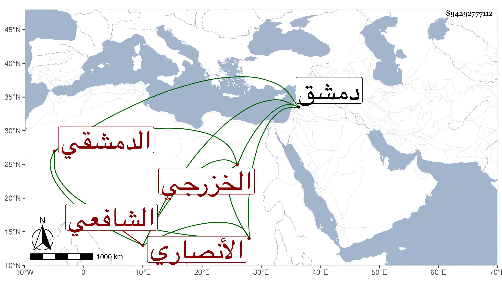

0902Sakhawi.DawLamic.ITO20230111-ara1.EIS1600.894292777112
Biography ID: 894292777112
152
محمد بن أحمد بن محمد بن علي بن سعيد بن سالم بن نمر بن يعقوب بن عبد الله بن صبح البهاء أو حامد بن الصدر أبي الطيب بن البهاء الأنصاري الخزرجي الدمشقي الشافعي ويعرف بابن أمام المشهد . ولد سنة سبع وستين وسبعمائة وأسمع من بعض أصحاب الفخر وابن القواس وأجاز له العز بن جماعة وأحمد بن سالم المكي والكمال بن حبيب وعلي بن يوسف الزرندي وغيرهم ونشأ نشأة حسنة فاشتغل بالفقه وتميز فيه وتأدب وأفتى ودرس وناب في الإمامة بالجامع الأموي بدمشق وفي القضاء أيضا لكنه امتنع منه في ولاية الشهاب الحسباني ، وكان لينا خيرا حسن السيرة لديه فضيلة . مات في ذي القعدة سنة خمس عشرة . ذكره شيخنا في أنبائه ومعجمه والمقريزي في عقوده وابن فهد في معجمه .
